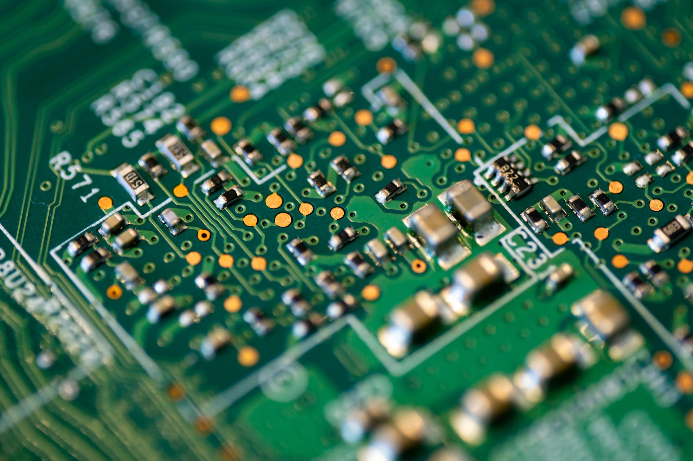
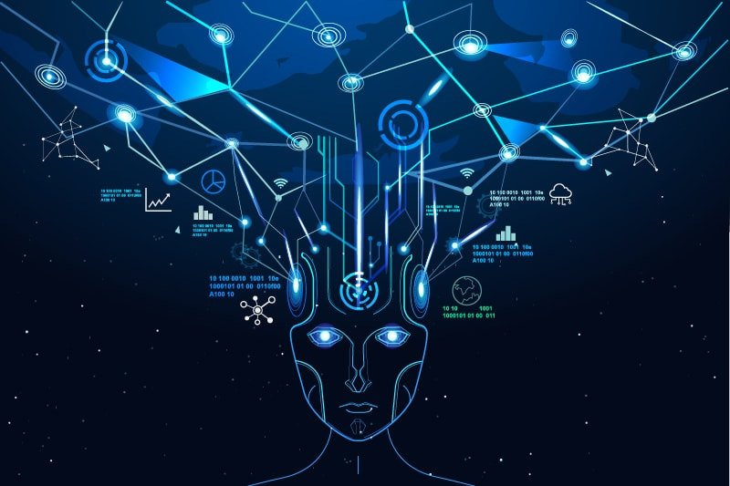

A. Team Profile - RoboticZ
I am an ENFP-A person according to my last test. So I have many creative ideas, seek for adventures and challenges and be passionate and fascinated with new areas. Therefore, I want to work in a team that has 3 to 4 people from different personalities that contribute their strengths into the work progress and success. Depending on emotions and feelings to work, I truly need somebody who has Analyst personalities because they work logically, have strong leadership, devote to seeking out new challenges, responsibilities and proving that nothing is impossible with little hard work. Besides, working with Defender (ISFJ) people would be a great opportunity for my team since they are able to help colleagues finish projects on time, keep organized and productive with the most kind and active-listening ability. The supportive and sympathetic dedication of Defender personality would keep the workflow running smoothly and efficiently. As a Campaigner, I don’t have practical skills and know the way to make my ideas come true. Consequently, people with Virtuoso personality who are often mechanics and engineers will bring such benefits to my team. They are excellent of using a variety of tools, building things and experiments as many as possible to fulfil their objectives. Though the Virtuoso are quiet and reserved, I believe I can use my friendly and talkative spirit to encourage them to open their heart, work closely with the team and together create a wonderful project.
B. My Project Ideas
Robotics in healthcare will be my project idea. To go into details, my project will focus on the tiny brain chip to detect and even cure some mental and physical problems. Equipped with the latest technology such as Artificial Intelligence, cloud computing, automated process, blockchain, big data, etc., the chip is implanted into human’s brain in hours and does not affect blood vessels, brain cells or memory. Then, the device automatically starts obtaining information, memories, linking with the whole body system, analyzing within seconds and sending data back to a decentralized system on blockchain. It’s just simply a small scar after the process and patients can even leave the hospital within the day. More details will be discussed in the following parts.
1. Motivation
When human came to adolescent and adult life, things become difficult, competitive and stressful for us. Sometimes, we did not know how to make ourselves calm, relieved and less anxious. I know a friend who committed suicide at the age of 17 because of stress and depression. I know some of my friends who tried to physically hurt themselves by handcuts. According to …, there are several millions of people who have mental health problems. This is an alert for human in this 4.0 era, where people can be mentally affected more than physically.
Healthcare industry has various methods to cure mental illnesses, ranging from Psychotherapy, Medication, to Art Therapy and Robot Therapy (Mind Organization UK n.d.). Hence, inspired from the latest technology, I come up with a brain chip that can track, analyze, detect and cure various illnesses, especially mental ones. The sooner we get aware of the situation, the more ways and time we have to cure it.
2. Detailed description
The tiny bran chip will be equipped with artificial intelligence, unlimited data storage, data analysis and transmission. The size would be as small as possible, like a coin. In fact, there are nanorobots that are under-research to cure chronic diseases like cancer by overcoming drug resistance and improving treatment of metastasis. However, micro- or nanorobots are too small to consist a lot of required technology and parts to perform well and serve the purpose of my project. Therefore, I think it would be practical and adequate to make the brain chip as small as a coin. Inside this brain chip will be a complex system of wires and electrode “threads” that operate the function of the chip as well as wireless connect the chip with a decentralized system. The insertion will be completely automated. A big machine is in charge of head incision, skull removal, chip placement and closure. This machine will be trained professionally, obviously equipped with Artificial Intelligence, big data and medical knowledge to perform even better than doctors. The automation ensures the entire surgery is precise, seamless and flawless. The patient can leave the hospital within a day and there is no hurt or side-effects on them. After the device is inserted, it starts obtaining information, knowledge, memories, health status, etc. and connecting with the control system and other organs of body. The Artificial Intelligence and Big Data are necessary and essential for the chip to analyze, detect and even cure any health problems. Specifically, the AI will scan, check the health status of the host and analyze to list out the best strategy, some alternatives and risks for doctors to consider. Then, doctors can discuss with patients to decide which method to apply. After both of patient and doctor agree, the smart contract – a blockchain technology – will be implemented to execute the cure stage because all of the information is sent to a decentralized system on blockchain, where access is limited to only specific people, doctors or therapists. The decentralized system is certain to protect the patient’s information from being hacked or adjusted and consequently secure the accurate function of the brain chip. Since the brain chip is powerful and can have a directly significant influence on the mental as well as physical problem of a person, it needs smart contracts and blockchain technology to ensure the security and accuracy of every step. For instance, one person with such a terrifying and horrible memory has post-trauma stress disorder (NIMH n.d.). A way to solve this problem is erasing this specific event in the memory so the host “forget” it permanently and can reduce his/her stress disorder. After getting approval from both doctors and the patient, the tiny brain chip must thoroughly select the right memory and “delete” it from the host’s memory. Or it would replace that event with different contexts, emotions and outcomes in order to make the event become happy and optimistic.
3. Tools and technology
As mentioned above, there are a huge number of required tools and technologies for my project idea. Some essential and must-have technologies can be outlined as Artificial Intelligence, Blockchain, Big Data, automation, robotics, etc. These latest technologies are under-research, improving, changing every minute and promise to materialize my project idea. In details, we can use tools for creating AI and “teaching” machine such as PyTorch, OpenNN, Google ML Kit, etc. One of the most famous and common blockchain technology is Ethereum – where smart contracts are executed. Other blockchain open sources can be utilized such as HydraChain, Corda, Hyperledger and BigchainDB (Ratan 2019).
4. Skills required
Since this project is related to many industries which varies from healthcare to robotics and AI, a lot of skills are compelled to make sure the project can be successful. First, medical skills and knowledge has to be implemented into the tiny brain chip and the “Insertion” machine. Programmers have to obtain the information and knowledge from expertise doctors around the world to put into the AI-based chip and “Insertion” machine with a view to making them operate and work better than doctors. Hence, programming, coding, developing and designing skills are certainly essential for this project. Latest technology cannot work without the usage of Information Technology industry. They need to write a complex and high-tech software for the chip, another one for the big machine, and write a lot of codes and advanced algorithms to train Artificial Intelligence as well as generate a blockchain for this medical use.
5. Outcome
If the project was successful, we could save millions of people from mental and physical problems. The brain chip can cure them from various problems, give them advice and support and try to help them have a better and optimistic life, especially better health status. This can solve the current situation of not having a real solution to the mental health problems and some chronic diseases. It could be a base, a foundation for the healthcare industry to keep researching and collaborating with AI, blockchain, robotics, etc. to come up with and create innovative disruptions for curing all of the health problems of human.
C. FEEDBACK
In my own perspective, I found the feedbacks given by my peers are relatively useful. Since micro-chip is currently an emerging field, there are still debates about its usage and implication. Thus, their feedbacks have helped me to understand more about this field from different angles, and critically evaluate my project to improve further.
Nonetheless, the approach that they used to provide feedbacks was considerably biased as they mainly focused on the negative aspects and weaknesses of my project. Most of the feedbacks were about how the design was not practical for utility and how I should elaborate more on the process of transplanting the micro-chip into human brains as well as the stability and trust of Blockchain and Artificial Intelligence. When providing feedbacks, biased comments are not highly recommended because neutral viewpoint is not prioritized, thus, adversely affecting the decision-making and personal development process.
Despite the fact the feedbacks were not very constructive, I agree that design and practicality are two of my project’s weaknesses. The feedbacks given by my friends have helped me to critically reflect on two areas: firstly, the importance of providing constructive feedbacks and secondly, the essence of the practicality of a technology project. From that reflection, in the future, when giving feedbacks to peers, I will apply the Feedback Sandwich approach, meaning the feedbacks will be arranged according to this structure: “compliment – constructive feedbacks – compliments”. This will help the feedback provider to communicate in an unbiased, neutral manner, which in turn, positively impact on the personal development of the feedback receiver. Additionally, as my project is strongly related to human health, I now understand that it is very vital to carefully explain and visualize my project in a detailed way so as to clearly illustrate the idea to relevant stakeholders. The feedbacks will also be used to update the design of the micro-chip to make it more practical for reality usage as well as to make the transplanting process become easier. Regards to Blockchain technology and Artificial Intelligence, I admit that these areas are still under research and early development stage, which creates some challenges when applying these technologies into the project idea. Perhaps, in the future, when AI and blockchain are fully understood and explored, things will be easier and more practical.
D. IT Technologies
1. Artificial Intelligence
Artificial Intelligence, commonly knowns as AI, has been developed and researched for over six decades and the evolution has gone through ups and downs much. Thanks to the rise of Big Data, super computers and machine learning technologies, the AI industry has been empowered and expanding rapidly in recent years.
Controversially, there is currently no widely accepted definition of AI. People usually refer AI as a super-intelligent machine that evolve, learn and do human-like tasks (Miller 2019). It can quickly adjust and adapt to new experiences as well as knowledge. AI works thanks to large amounts of data with swift, seamless processing and ultra-intelligent algorithms, allowing them to learn automatically, on their own from knowledge, characteristics and feature put in the data (Duan, Edwards & Dwivedi 2019).
AI automates repetitive learning, adjustment and discovery through data analysis and storage. Instead of automating tasks like a robot, AI does continual, monotonous and computerized tasks efficiently, accurately and reliably (Haenlein & Kaplan 2019). For this AI training, human need to set up the whole system, program the right algorithm, put the big data storage and ask the right questions for AI to evolve and keep learning. Therefore, AI detect and analyze structure and regularities in the data so that the algorithm becomes a classifier or a predictor. So, for instance, as the algorithm is able to teach itself how to solve mathematic equations, AI is able to teach itself what products and services to recommend for consumers on e-commerce websites. Moreover, the models will adapt quickly when provided new data and input.

By using neural networks along with analyzing the data deeper and deeper, Artificial Intelligence can interpret the most out of data and achieve notable and significant accuracy (Haenlein & Kaplan 2019). For example, the more we use Siri, Google Assistant, Alexa, etc., the more rapidly they evolve and understand ourselves. It eventually provides users with what we truly need and want on the right time and at the right place. This brings a vast benefit to retailer when they apply AI algorithms to offer personalized recommendations, discuss purchase options with customers online and can help customers try on fashion and accessories virtually. Or in the medical area, AI-based machines are capable of detecting, classifying images and recognizing objects efficiently and effectively to find cancer with the same accuracy as highly trained radiologists. Some AI applications help patients by reminding them to take pills, what to eat, when and how long to exercise. In the transportation area, AI makes human’s dream come true by facilitating self-driving cars and airplanes. For a while, autopilots guide commercial and military aircrafts without direct assistance from pilots. It follows the flight route, maintaining attitudes, flight levels, and even land planes in case the weather is bad. Regards to self-driving cars, Google and Tesla are two competing leaders to operate an entire self-driving car without any human involvement.
The impact of AI in this world, is undoubtedly, significant and important. Currenly, AI is just beginning to step into human’s lives. In the future, there is likelihood that AI would control most of our tasks and activities. There will be AI home assistant, being in charge of everything in the household. When the system scans and detects that there is little food and drink in refrigerator, it will automatically contact suppliers and place orders. It may ask human if there are any changes or adjustments in the quantity, brands, etc. prior to placing orders. When the house is dirty, AI can activate the automated vacuum cleaner to wipe and clean. The home assistant will activate self-driving car to take children to school and parents to work offices when the schedule is set every day. Eventually, it can replace jobs of secretary, assistants, housemaids, etc.
Regards to banking and financial industry, AI seems to have a big impact on the transformation and technology adaption of this area (Duan, Edwards & Dwivedi 2019). Robo-advisors with AI-based algorithms such as SoFi Automated Investing, Betterment, Wealthfront, Wealthsimple, etc. can automatically invest in stocks and bonds to generate a good return and minimize the risks for investors. All users do is create an account, answer questionnaires, and the robo-advisor would invest based on the goals, risk tolerance and personalized strategies. One day, robo-advisors can replace some careers like brokers, wealth managers, hedge fund managers, etc.
In my daily lives, Artificial Intelligence will certainly play an important role to help and boost the living standards. My Samsung phone has both Bixby and Google Assistant to help me set a schedule, set alarms, call someone, find information online quickly and sometimes entertain. Though they only have limited capabilities now, I believe they will evolve and improve in the future to become a ‘real’ assistant that can fully control my phone and connect with my whole life. The AI-based assistant will be personalized for me, and only I can talk and interact with it. It can do shopping for me, virtually fit size for me, place orders, recommend retailers and brands, automatically book flights/cars/hotels based on my schedule, etc. Regards to impact on my family members, AI will help my parents a lot. Since they’re getting older, they often forget things. AI can remind them to take pills, exercise, visit their children.
2. Blockchain Technology

Data storage, privacy, security and validation are rising as alarming concerns in every industry. People are seeking for a place to facilitate transactions securely, anonymously, a place to store data with limited access and high security (Goldstein, Jiang & Karolyi 2019). Then the blockchain technology exists. Things began in 2008, when Satoshi Nakamoto created and made the first successful Bitcoin transaction. Blockchain technology is intentionally created to fuel the existent network of Bitcoin. Later, the distributed ledger technology expands rapidly, involves in and boost the efficiency and effectiveness of a variety of industries (Rubini 2019).
A blockchain is a distributed ledger data structure that is considered to be the most secure and technological database model. Risius and Spohrer (2017) defined blockchain as a “fully distributed system” which captures and stores the information by encoding. All of transactions, information and assets recorded on the chain will be permanently visible and impossible for every party within the network to edit (Türegün 2019). The more transactions enacted, the more surge in the size of chain and number of blocks added through a hashing algorithm This distributed ledger technology ensures there is no centralized system and users can directly interact and transfer to each other, without any third party.
A common application of blockchain is the cryptocurrencies – which are Bitcoin, Ethereum, etc. They are digital assets which utilize cryptography to validate and verify transfers and data. People favor cryptocurrencies because when they use cryptocurrencies as a medium of exchange, these transactions do not go through and are not checked, recorded by any financial intermediaries and governments. Moreover, transactions are free, anonymous and highly private: only parties involved in the transactions can see the information.
Another impact of blockchain is in the financial and business industry. Within the stock, bonds and assets trading area, blockchain technology enhances and boosts the transparency and clarity of every trade by recording all transactions in a public ledger that can be visible and accessed by everyone. Moreover, blockchain can create a peer-to-peer transaction, without the need of brokers, banks and financial institutions, making the transaction low fee, private and secure. Besides, the existence of cryptocurrencies like Bitcoin and Ethereum brings a new option for investors in the portfolio management. In addition, when two parties want to co-operate with each other but there is no trust between them, blockchain and smart contract can solve this problem. Smart contract is a term referred to the process of automated enactment if conditions and requirements of a contract are satisfied. So when every piece of information on blockchain is input and accurately validated, smart contract will enact step by step until things are done.
For government, blockchain can solve the problem of traceability and storage of citizens’ identity. By bringing all the information of citizens such as name, age, occupation, social insurance numbers, etc. into every block on the chain, governments can easily trace, track and verify every citizen without being hacked and adjusted. Or for voting process, each of citizen will have a unique code and vote recorded on the blockchain. Therefore, the election results won’t be hacked and edited.
E. Interview IT professional
Name: Pham Tran Van Anh
Occupation: IT Business Analyst
Company: Karros Technologies Vietnam
1. Please tell us about your IT work. What exactly do you do?
I’m an IT business analyst. I define the users need, collect requirement - needs – expectation from different stakeholders, analyze them to see if there are any unclear points. Then I transfer these requirements into documentation (use cases, user story, diagram) in a business information system so that my development team can build it. In short, I get to know & transfer the ‘language’ of normal users to technical language.
2. Please tell us about the industry you work in.
I used to work as a Business Analyst in the beverages industry, specifically for a famous coffee chains in Vietnam. Now at Karros Technologies Vietnam, the industry is transportation. We concentrate on the school bus system in the USA. Although the development team is in Vietnam, the entire operation and market is in the USA. Do you remember the yellow school bus you usually see on the movie? So we have the system to manage the school bus including planning the routes, the bus stops and managing the bus operation.
3. What other kinds of work do you have to do?
Support the developer team like testing the features to see if there are any issues/ bugs. Sometimes, I design UI for the feature/app.
4. Who are all the different people you interact with in your work? Please tell us about them.
- End-users: I must interact with them to understand their expectation, their needs and what can we do to help them. It requires me the ability to discuss their points, recommend our products, negotiate and finalize any projects.
- Manager, C-level: Certainly, when you work in a company, you need to understand the company plan, strategy, strengths, weaknesses and the expectation as well as the organizational culture.
- Product Designers: I need to co-operate with them to ensure the quality of the UI/UX of the project that the screen is good, simple and optimized for end-users and satisfy the requirements.
- Developers: they code, program and develop the system. We have front-end and back-end developers. Front-end developers code the user interface – user interacts with this. Front-end developers are responsible for a website’s user-facing code and the architecture of its immersive user experience). A back-end developer is a type of programmer who creates the logical back-end and core computational logic of a website, software or information system. The back end of a website consists of a server, an application, and a database.
- Quality Controller (Tester): they test the feature after developers build it. Sometimes I will discuss points that align with expectations and requirements of users, and points that needs adjusting and improving.
5. Please tell us about your interactions with other IT professionals.
As I mentioned above, other IT professionals I usually interact with are front-end, back-end developers, quality controllers, my manager and product designer.
6. What about your interactions with clients or investors?
The sales and operation teams in the USA interact the most with clients. I just interact with them a few times. Usually I get to know the clients via these teams in the States. No investors
7. What aspects of your work do you spend most time on? Please tell us about these.
Analyzing requirements – as sometimes people just tell you what they want, but what they want may be different from what they need. So we have to consider, analyze and investigate carefully. Otherwise, the stuff we build is useless.
Also, people usually don’t remember all the details of a project. We have to think about exception case, what if they do that, alternative ways they can do.
8. Which aspects of your work do you find most challenging?
I think analyzing requirements is the most challenging task. As I mentioned above, this requires lots of work because it’s very important and essential. If the requirement is defined incorrectly, or if any important point is missed, consequently we will have to spend lots of time and effort to fix it.
9. Finally, can you share an example of the work you do that best captures the essence of the IT industry?
I’ll tell how you how IT have changed the school bus system – provide more information and safety for children. In the past, parents had no idea where the child was after the child got on the bus. If the child had missed the bus, or if he/she hat got off at wrong stop, or if the driver had driven safely, where the bus had been, both of the school and parents wouldn’t have known.
But now, thanks to IT industry, all of those concerns are solved. There is a GPS system on the bus -> parents and school can know where the bus is. The bus also has fleet manage system, -> this can help us know all events of the bus: close the door, open the door, brace, gear changed, emergency press -> the admin can be quickly informed if there is any urgent event-> respond quickly to any situation.
We have a mobile app for parents can keep track the bus as well: when the bus arrives, where the bus is, what bus schedule is. Everything can be tracked and detected quickly. When the students get on the bus, they scan their cards, then the information will be sent to parents, and school admin. So that parents can know that their children are on the bus, the school can keep track if any student is missing.
There is another app for driver. This app is installed on tablet. It will show the driver the route plan. Route detail, bus stop they need to stop, how many students they need to pick up so they easily know their work, drive more safely and easily.